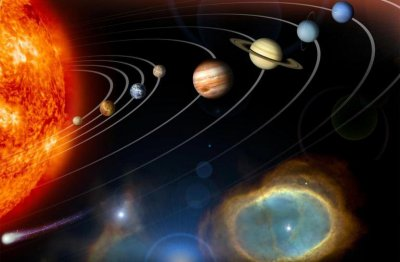

|
Home
Mars
Earth
Jupiter
Mercury
Neptune
Pluto
Saturn
Uranus
Venus
Sun
Sources
|
 Our solar system consists of an average star that we call the Sun; we have the planets Mercury, Venus, Earth, Mars, Jupiter, Saturn, Uranus and Neptune. The solar System includes the satellites of the planets; numerous comets, asteroids, meteoroids and the interplanetary medium. The Sun is the richest source of electromagnetic energy (mostly in the form of heat and light) in the solar system. The Sun's nearest known stellar neighbor is a red dwarf star called Proxima Centauri; it is at a distance of 4.3 light years away. The whole solar system all together with the local stars orbits the center of our home galaxy it has a spiral disk of 200 billion stars we call the Milky Way. The Milky Way has two small galaxies orbiting it close, they are called the Large Magellanic Cloud and the Small Magellanic Cloud. The nearest large galaxy is the Andromeda Galaxy. It is a spiral galaxy like the Milky Way but is 4 times as massive and is 2 million light years away. Our galaxy, one of billions of galaxies known, is traveling through intergalactic space.
When looking down from above the Sun's north pole, the planets orbit in a counter-clockwise direction. The planets orbit the Sun in or near the same plane, called the ecliptic. Pluto is an exception because it orbits is the most highly inclined and the most highly elliptical of all the planets. Because of this, for part of its orbit, Pluto is closer to the Sun than is Neptune. The axis of rotation for most of the planets is nearly perpendicular to the ecliptic. The exceptions are Uranus and Pluto, which are tipped on their sides.
|